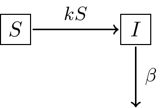
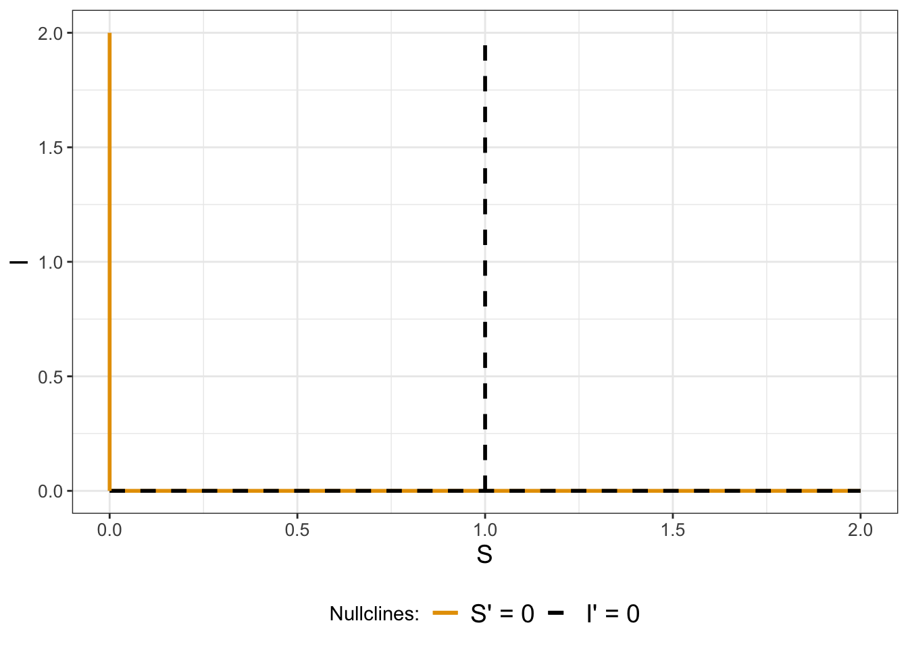
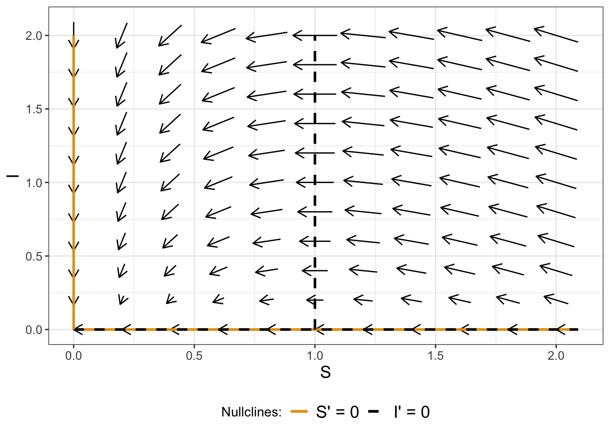
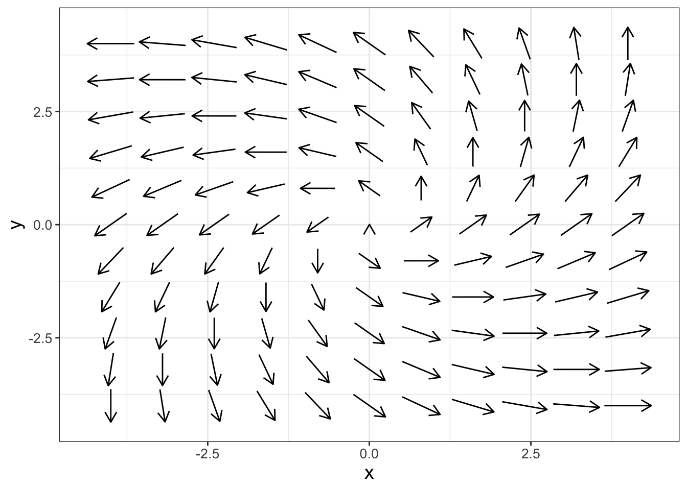
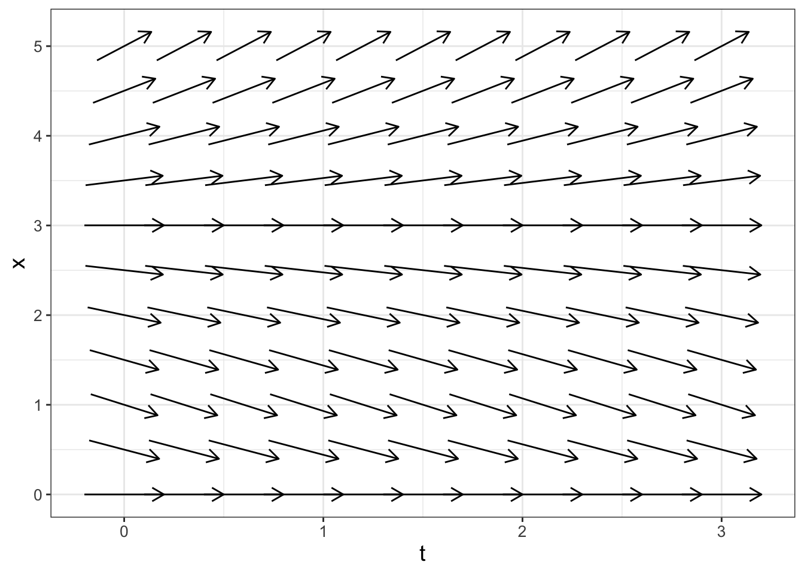

6 Coupled Systems of Equations
Chapter 5 focused on qualitative analysis of a single differential equation using phase lines and slope fields. This chapter extends this idea further to systems of differential equations, where the natural extension of a phase line is a phase plane. Here is the good news: many of the techniques are similar to the ones introduced in Chapter 5. Let’s get started!
Note
This chapter uses following libraries: ggplot2 (part of the tidyverse) and demodelr. See Section 2.3 on how to install packages. Prior to running any code in this section, include library(tidyverse) and library(demodelr).
6.1 Flu with quarantine and equilibrium solutions
In Exercise 1.10 in Chapter 1 we developed the following model for the flu as a coupled system of equations shown in Equation 6.1:
\[ \begin{split} \frac{dS}{dt} &= -kSI \\ \frac{dI}{dt} &= kSI-\beta I \\ \frac{dR}{dt} &= \beta I, \end{split} \tag{6.1}\]
where \(S\) represents susceptible people, \(I\) infected people, and \(R\) recovered people. Another way to represent this context is with the schematic shown in Figure 6.1:
While Equation 6.1 is a system of three differential equations, notice that the variable \(R\) is not present on the right hand sides of each equation. As a result, the variable \(R\) is decoupled from this system of equations, so we can just focus on the rates of change for \(S\) and \(I\) (Equation 6.2):
\[ \begin{split} \frac{dS}{dt} &= -kSI \\ \frac{dI}{dt} &= kSI-\beta I \\ \end{split} \tag{6.2}\]
With Equation 6.2 we will solve for equilibrium solutions (similar to what we did in Chapters 3 and 5, which we focus on next.
6.2 Nullclines
The process to determine equilibrium solutions for a system of differential equations starts with computing the nullclines for each rate in the system of equations. The nullclines are solutions in the plane where one of the rates is zero, so for example either \(\displaystyle \frac{dS}{dt}\) or \(\displaystyle \frac{dI}{dt}\) is zero. For coupled systems of equations, the equilibrium solutions are where the rates \(\displaystyle \frac{dS}{dt}\) and \(\displaystyle \frac{dI}{dt}\) in Equation 6.2 are both zero, found through algebraically solving the system of equations in Equation 6.3:
\[ \begin{split} 0 &= -kSI \\ 0 &= kSI - \beta I \end{split} \tag{6.3}\]
Let’s examine the first equation (\(0 = -kSI\)). Since all the terms are expressed as a product, then nullclines for \(S\) occur when either \(S=0\) or \(I=0\).
In a similar manner, the nullclines for \(I\) occur when \(0 = kSI - \beta I\). For this expression we can factor out an \(I\), yielding \(0 = I \cdot (kS - \beta)\). Because the last equation is factored as a product, nullclines for \(I\) are either \(I=0\) or by solving \(kS-\beta\) for \(S\) to yield \(\displaystyle S = \frac{\beta}{k}\).
Nullclines are not equilibrium solutions by themselves - it is the intersection of two different nullclines that determines equilibrium solutions. Figure 6.2 shows the nullclines in the \(S-I\) plane (since we have two equations), with \(S\) on the horizontal axis and \(I\) on the vertical axis. In Figure 6.2 we have also assumed that \(\beta=1\) and \(k=1\). The \(S-I\) plane shown in Figure 6.2 is the beginning of the construction of the phase plane for Equation 6.2 and also to determine the equilibrium solutions.

A key thing to note is that where two different nullclines cross is an equilibrium solution to the system of equations (both \(\displaystyle \frac{dS}{dt}\) and \(\displaystyle \frac{dI}{dt}\) are zero at this point). Examining Figure 6.2 three possibilities appear:
- There is an equilibrium solution at \(S=0\) and \(I=0\) (otherwise known as the origin). This equilibrium solution makes biological sense: if there is nobody susceptible or infected there are no flu cases (everyone is perfectly healthy - yay!) .
- The entire horizontal axis is an equilibrium solution because \(I=0\), which makes both \(\displaystyle \frac{dS}{dt}\) and \(\displaystyle \frac{dI}{dt}\) zero. There is a practical interpretation of this nullcline - whenever \(I=0\), meaning there are no infected people around, infection cannot occur.
- There is also a third possibility where the vertical line at \(S=1\) crosses the horizontal axis (\(S=1\), \(I=0\)), but that also falls under the second equilibrium solution.1
Now that we have identified our nullclines and equilibrium solutions, we will add additional context with the flow of the solution.
6.3 Phase planes
Next we can add more context to the Figure 6.2 by evaluating different values of \(S\) and \(I\) into our system of equations and plotting the phase plane. How we plot the phase plane is similar to the method in Chapter 5. We will test points around an equilibrium solution to determine if the solution is increasing or decreasing in \(S\) or \(I\) independently.
Table 6.1 evaluates the derivatives \(\displaystyle \frac{dS}{dt}\) and \(\displaystyle \frac{dI}{dt}\) in Equation 6.2 for different values of \(S\) and \(I\).
dSdt) and \(\displaystyle \frac{dI}{dt}\) (as dIdt) for Equation 6.2.
| S | 0 | 1 | 2 | 0 | 1 | 2 | 0 | 1 | 2 |
| I | 0 | 0 | 0 | 1 | 1 | 1 | 2 | 2 | 2 |
| dSdt | 0 | 0 | 0 | 0 | -1 | -2 | 0 | -2 | -4 |
| dIdt | 0 | 0 | 0 | -1 | 0 | 1 | -2 | 0 | 2 |
Notice in Table 6.1 the different values of \(\displaystyle \frac{dS}{dt}\) and \(\displaystyle \frac{dI}{dt}\) in Equation 6.2 at each of the given \(S\) and \(I\) values. We can plot each of the coordinate pairs of \(\displaystyle \left( \frac{dS}{dt}, \frac{dI}{dt} \right)\) as a vector (arrows) in the \((S,I)\) plane. To do so, associate \(\displaystyle \frac{dS}{dt}\) with left-right motion, so positive values of \(\displaystyle \frac{dS}{dt}\) mean the vector points to the right. Likewise, we associate \(\displaystyle \frac{dI}{dt}\) with up-down motion, so positive values \(\displaystyle \frac{dI}{dt}\) mean the vector points up.
Defining the directions of the vectors in this way is also consistent when Equation 6.2 is evaluated at the nullcline solutions. At the point \((S,I)=(1,1)\), we have an arrow that points directly to the west because \(\displaystyle \frac{dS}{dt} < 0\) and \(\displaystyle \frac{dI}{dt} =0\). Continuing on in this manner, by sequentially sampling points in the \((S,I)\) plane we get a vector field plot (Figure 6.3), superimposed with the nullclines.

6.3.1 Motion around the nullclines
We can also extend the motion around the nullclines to investigate the stability of an equilbrium solution. With a one-dimensional differential equation we used a number line to quantify values where the solution is increasing / decreasing. The problem with several differential equations is that the notion of “increasing” or “decreasing” becomes difficult to understand - there is an additional degree of freedom! Simply put, in a plane you can move left/right or up/down. The benefit for having nullclines is that they isolate the motion in one direction. When \(\displaystyle \frac{dS}{dt}=0\) the only allowed motion is up and down; when \(\displaystyle \frac{dI}{dt}=0\) the only allowed motion is left and right.
In general for a two-dimensional system:
- When a horizontal axis variable has a nullcline, the only allowed motion is up/down.
- When a vertical axis variable has a nullcline, the only motion is up/down.
Applying this knowledge to Equation 6.2, if we choose points where \(I'=0\) then we know that the only motion is to the left and the right because \(S\) can still change along that curve. If we choose points where \(S'=0\) then we know that the only motion is to the up/down because \(I\) can still change along that curve.
6.3.2 Stability of an equilbrium solution
Figure 6.3 qualitatively tells us about the stability of an equilibrium point. One of the equilibrium solutions is at the origin \((S,I)=(0,0)\). As before we want to investigate if the equilibrium solution is stable or unstable. As you can see the arrows appear to be pointing into and towards the equilibrium solution. So we would classify this equilbrium solution as stable.
6.4 Generating a phase plane in R
Let’s take what we learned from the case study of the flu model with quarantine to qualitatively analyze a system of differential equations:
- We determine nullclines by setting the derivatives equal to zero.
- Equilibrium solutions occur where nullclines for the two different equations intersect.
- The arrows in the phase plane help us characterize the stability of the equilibrium solution.
The demodelr package has some basic functionality to generate a phase plane. Consider the following system of differential equations (Equation 6.4):
\[ \begin{split} \frac{dx}{dt} &= x-y \\ \frac{dy}{dt} &= x+y \end{split} \tag{6.4}\]
In order to generate a phase plane diagram for Equation 6.4 we need to define functions for \(x'\) and \(y'\), which I will annotate as \(dx\) and \(dy\) respectively. We are going to collect these equations in one vector called system_eq, using the tilde (~) as a replacement for the equals sign:
system_eq <- c(
dx ~ x - y,
dy ~ x + y
)Then what we do is apply the command phaseplane, which will generate a vector field over a domain:
phaseplane(system_eq,
x_var = "x",
y_var = "y"
)
Let’s discuss how the phaseplane function works, first with the required inputs:
- You will need a system of differential equations (which we defined as
system_eq). - Next you need to define which variable belongs on the horizontal axis (
x_var = 'x') or the vertical axis (y_var = 'y'). In Exercise 6.3 you will explore what happens if these get mixed up.
There are some additional options for phaseplane:
- The option
eq_soln = TRUEwill determine if there are any equilibrium solutions to be found and report them to the console. This option does not provide a definitive answer, but at least it tells you where to look. You can always confirm if a point is an equilibrium solution by evaluating the differential equation. - You can adjust the windows that are plotted with the options
x_windowandy_window. Both of these need to be defined as a vector (e.g.x_window = c(-0.1,0.1). The default window size is \([-4,4]\) for both axes. - There is an option
parametersthat allows you to pass any parameters to the phase plane. Later chapters will introduce systems where you can modify the parameters - we won’t worry about that now.
6.5 Slope fields
For a one-dimensional differential equation, we call the phase plane a slope field. For a given differential equation \(y'=f(t,y)\), at each point in the \(t-y\) plane the differential equation is evaluated, showing the direction of the tangent line at that particular point. The phaseplane function can also plot slope fields. Let’s take a look at an example first and then discuss how that it works.
Example 6.1 A colony of bacteria growing in a nutrient-rich medium depletes the nutrient as they grow. As a result, the nutrient concentration \(x(t)\) is steadily decreasing. Determine the slope field for the following differential equation:
\[ \frac{dx}{dt} = - 0.7 \cdot \frac{x \cdot (3- x)}{1 + x} \tag{6.5}\]
The R code shown below will generate the slope field for Equation 6.5 (shown in Figure 6.4):
# Define the windows where we make the plots
t_window <- c(0, 3)
x_window <- c(0, 5)
# Define the differential equation
system_eq <- c(
dt ~ 1,
dx ~ -0.7 * x * (3 - x) / (1 + x)
)
phaseplane(system_eq,
x_var = "t",
y_var = "x",
x_window = t_window,
y_window = x_window
) 
A few notes about the code that generated Figure 6.4:
- The variable on the horizontal axis (
x_var) is \(t\), and on the vertical axis (y_var) is \(x\). Confusing, I know. - The viewing window for the axis is also defined accordingly.
- Notice how the variable
system_eqalso contains the additional equationdt = 1. What we are doing is re-writing Equation 6.5 by introducing a new variable \(s\) (Equation 6.6):
\[ \begin{split} \frac{dt}{ds} &= 1 \\ \frac{dx}{ds} &= - 0.7 \cdot \frac{x \cdot (3- x)}{1 + x} \end{split} \tag{6.6}\]
The differential equation \(\displaystyle \frac{dt}{ds} = 1\) has a solution \(s=t\), so really Equation 6.6 is a (slightly more) complicated way to express Equation 6.5. Hacky? Perhaps. However re-writing Equation 6.5 was a quick and handy workaround to re-use code.
This chapter introduced a lot of useful R code to aid in visualization. The good news is that we will explore additional analyses of systems of differential equations starting with Chapter 15 - there is so much more to learn. Onward!
6.6 Exercises
Exercise 6.1 Determine equilibrium solutions for Equation 6.4.
Exercise 6.2 Generate a phase plane for Equation 6.4, but set the option eq_soln = TRUE. Did phaseplane detect the equilibrium solution you found in Exercise 6.1? If not, repeat the phase plane, but set x_window = c(-0.1,0.1) and y_window = c(-0.1,0.1) and repeat.
Exercise 6.3 Generate a phase plane for Equation 6.4, but this time set x_var = y and y_var = x (swap which variable is which). Notice that the incorrect phase plane is produced. What is the corresponding differential equation that is visualized by this phase plane?
Exercise 6.4 This problem considers the following system of differential equations: \[ \begin{split} \frac{dx}{dt} &= y \\ \frac{dy}{dt} &= -x \end{split} \]
- Determine the equations of the nullclines and equilibrium solution of this system of differential equations.
- Modify the function
phaseplaneto generate a phase plane of this system. - For each point along a nullcline, determine the resulting motion (up-down or left-right).
- Based on the work you generated, determine if the equilibrium solution is stable, unstable, or inconclusive.
- Verify that the functions \(x(t) = \sin(t)\) and \(y=\cos(t)\) is one solution to this system of differential equations.
Exercise 6.5 Consider the following system of differential equations:
\[ \begin{split} \frac{dx}{dt} &= y \\ \frac{dy}{dt} &= 3x^{2}-1 \end{split} \]
- Determine the equations of the nullclines and equilibrium solutions for this system of differential equations.
- For each point along a nullcline, determine the resulting motion (up-down or left-right).
- Modify the function
phaseplaneto generate a phase plane of this system. Adjust the windows for \(x\) and \(y\) to be between -1 and 1. - Make a hypothesis to classify if the equilibrium point is stable or unstable.
Exercise 6.6 (Inspired by Thornley and Johnson (1990)) A plant grows proportional to its current length \(L\). Assume this proportionality constant is \(\mu\), whose rate also decreases proportional to its current value. The system of equations that models this plant growth is the following:
\[ \begin{split} \frac{dL}{dt} &= \mu L \\ \frac{d\mu}{dt} &= -0.1 \mu \\ \end{split} \]
- Explain why \(L=0\) and \(\mu=0\) is an equilibrium solution to this differential equation.
- Modify the function
phaseplaneto generate a phase plane of this system. Use the window \(-0.1 \leq L \leq 0.1\) and \(-0.1 \leq \mu \leq 0.1\). (For this problem negative values of \(L\) and \(\mu\) are not sensible, but it aids in visualizing the equilibrium solution.) - Is the origin a stable equilibrium solution?
Exercise 6.7 (Inspired by Logan and Wolesensky (2009)) Red blood cells are formed from stem cells in the bone marrow. The red blood cell density \(r\) satisfies an equation of the form
\[ \frac{dr}{dt} = \frac{0.2r}{1+r^{2}} - 0.1 r \]
- What are the equilibrium solutions for this differential equation?
- Modify the function
phaseplaneto generate a phase line for this differential equation for \(0 \leq t \leq 5\) and \(0 \leq r \leq 5\). - Based on the phase line, are the equilibrium solutions stable or unstable?
Exercise 6.8 (Inspired by Berg (2011)) Organisms that live in a saline environment biochemically maintain the amount of salt in their blood stream. An equation that represents the level of \(S\) in the blood is the following:
\[ \frac{dS}{dt} = 1 + 0.3 \cdot (3 - S) \]
- What are the equilibrium solutions for this differential equation?
- Modify the function
phaseplaneto generate a phase line for this differential equation for \(0 \leq t \leq 10\) and \(0 \leq S \leq 10\). - Based on the phase line, are the equilibrium solutions stable or unstable?
Exercise 6.9 Consider the differential equation \(\displaystyle \frac{dx}{dt} = -3x\). Here you will examine creating a two-dimensional system of equations by re-parameterizing \(s=t\).
- Define the variable \(t = s\). For this case, what is \(\displaystyle \frac{dt}{ds}\)?
- When \(x = f (t (s))\) (\(x\) is a composition between \(t\) and \(s\)), one way to express the chain rule is \(\displaystyle \frac{dx}{ds} = \frac{dx}{dt} \cdot \frac{dt}{ds}\). Use this fact to explain why \(\displaystyle \frac{dx}{ds} = -3x\).
- Finally use your previous work to determine the system of equations for \(\displaystyle \frac{dx}{ds}\) and \(\displaystyle \frac{dt}{ds}\).
Exercise 6.10 (Inspired by Berg (2011)) The core body temperature (\(T\)) of a mammal is coupled to the heat production (scaled by heat capacity \(Q\)) with the following system of differential equations:
\[ \begin{split} \frac{dT}{dt} &= Q + 0.5 \cdot (20-T) \\ \frac{dQ}{dt} &= 0.1 \cdot (38-T) \end{split} \] a. Determine the equations of the nullclines and equilibrium solution of this system of differential equations. b. For each point along a nullcline, determine the resulting motion (up-down or left-right). You may assume that both \(T>0\) and \(Q>0\). c. Make a hypothesis to classify if the equilibrium solution is stable or unstable.
Exercise 6.11 Consider the following system of differential equations for the lynx-hare model (Equation 3.7 from Chapter 3):
\[ \begin{split} \frac{dH}{dt} &= r H - b HL \\ \frac{dL}{dt} &=ebHL -dL \end{split} \]
- Determine the equilibrium solutions for this system of differential equations.
- Determine equations for the nullclines, expressed as \(L\) as a function of \(H\). There should be two nullclines for each rate.
Exercise 6.12 (Inspired by Berg (2011)) A chemostat is a tank used to study microbes and ecology, where microbes grow under controlled conditions. Think of this like a large tank with nutrient-rich water that is continuously cycled. For example, differential equations that describe the microbial biomass \(W\) and the nutrient concentration \(C\) (in the culture) are the following:
\[ \begin{split} \frac{dW}{dt} &= \mu W - F \frac{W}{V} \\ \frac{dC}{dt} &= D \cdot (C_{R}-C) - S \mu \frac{W}{V}, \end{split} \]
where we have the following parameters: \(\mu\) is the per capita reproduction rate, \(F\) is the flow rate, \(V\) is the volume of the culture solution, \(D\) is the dilution rate, \(C_{R}\) is the concentration of nutrients entering the culture, and \(S\) is a stoichiometric conversion of nutrients to biomass.
- Write the equations of the nullclines for this differential equation.
- Determine the equilibrium solutions for this system of differential equations.
- Generate a phase plane for this differential equation with the values \(\mu=1\), \(D=1\), \(C_{R}=2\), \(S=1\), and \(V=1\).
- Classify the stability of the equilbrium solutions.
Exercise 6.13 (Inspired by Olinick (2014)) A rumor is spreading through a population of \(N\) people, with people who are unaware \(U\) of the rumor, and \(R\) the people who spread the rumor. A system of differential equations that describes the spread of the rumor through the population is:
\[ \begin{split} \frac{dU}{dt} &= -U\cdot R \\ \frac{dR}{dt} &= R \cdot (2U - N) \end{split} \]
- Determine the equations of the nullclines and equilibrium solutions for this system of differential equations.
- For each point along a nullcline, determine the resulting motion (up-down or left-right).
- Modify the function
phaseplaneto generate a phase plane of this system. Set \(N=100\). - Make a hypothesis to classify if the equilibrium point is stable or unstable.
Exercise 6.14 A classical paper Experimental Studies on the Struggle for Existence: I. Mixed Population of Two Species of Yeast by Gause (1932) examined two different species of yeast growing in competition with each other. The differential equations given for two species in competition are:
\[ \begin{split} \frac{dy_{1}}{dt} &= -b_{1} y_{1} \frac{(K_{1}-(y_{1}+\alpha y_{2}) )}{K_{1}} \\ \frac{dy_{2}}{dt} &= -b_{2} y_{2} \frac{(K_{2}-(y_{2}+\beta y_{1}) )}{K_{2}}, \\ \end{split} \]
where \(y_{1}\) and \(y_{2}\) are the two species of yeast with the parameters \(b_{1}, \; b_{2}, \; K_{1}, \; K_{2}, \; \alpha, \; \beta\) describing the characteristics of the yeast species.
- Determine the equilibrium solutions for this differential equation. Express your answer in terms of the parameters \(b_{1}, \; b_{2}, \; K_{1}, \; K_{2}, \; \alpha, \; \beta\).
- Gause (1932) computed the following values of the parameters: \(b_{1}=0.21827, \; b_{2}=0.06069, \; K_{1}=13.0, \; K_{2}=5.8, \; \alpha=3.15, \; \beta=0.439\). Using these values and your results from part a, what would be the predicted values for the equilibrium solutions? Is there anything odd about the values for these equilibrium solutions?
- Use the function
rk4to solve this system of differential equations numerically and plot your solutions. Use initial conditions of \(y_{1}(0)=.375\) and \(y_{2}(0)=.291\), with \(\Delta t = 1\) and \(N=600\).
Berg, Hugo van den. 2011. Mathematical Models of Biological Systems. Oxford, New York: Oxford University Press.
Gause, G. F. 1932. “Experimental Studies on the Struggle for Existence: I. Mixed Population of Two Species of Yeast.” Journal of Experimental Biology 9 (4): 389–402.
Logan, J. David, and William Wolesensky. 2009. Mathematical Methods in Biology. 1st ed. Hoboken, N.J: Wiley.
Olinick, Michael. 2014. Mathematical Modeling in the Social and Life Sciences. Hoboken, NJ: Wiley.
Thornley, John H. M., and Ian R. Johnson. 1990. Plant and Crop Modelling: A Mathematical Approach to Plant and Crop Physiology. Caldwell, New Jersey: Blackburn Press.
For the general system (Equation 6.2), the equilibrium solution would that be \(\displaystyle S=\frac{\beta}{k}\) and \(I=0\).↩︎